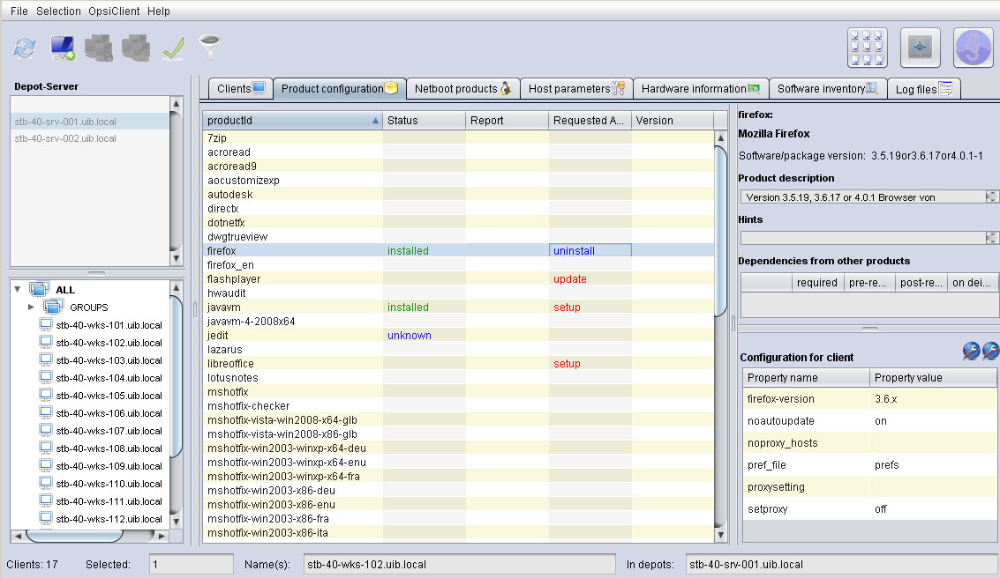
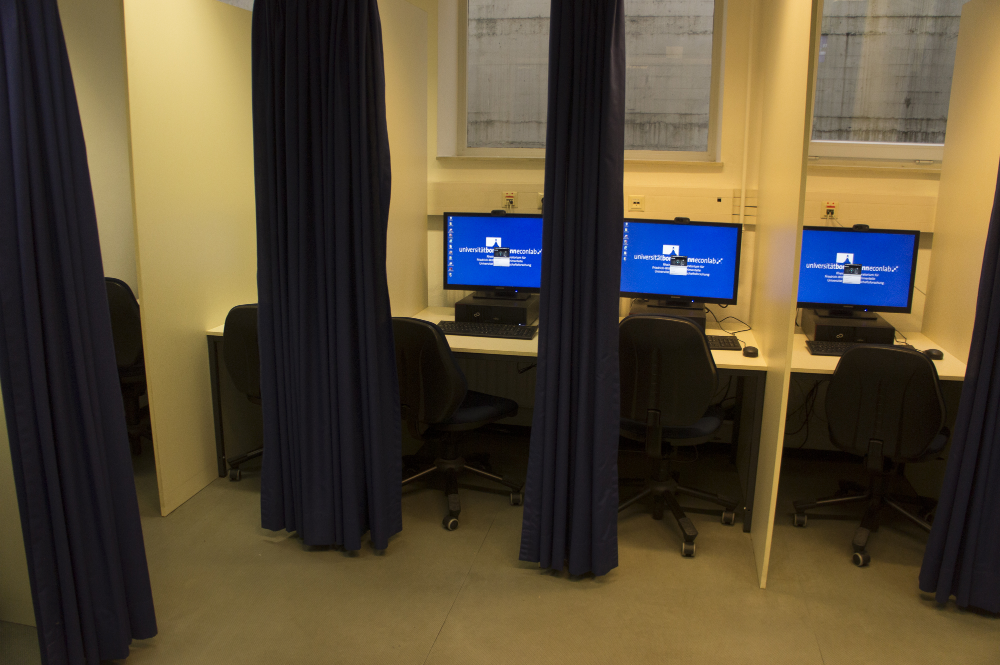
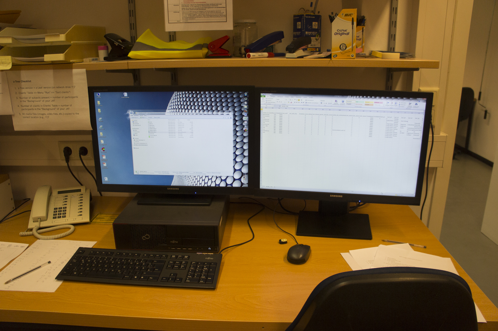

Created by Heiko Borchers with reveal.js
Programming Language for statistic computing
Comparebale to MATLAB and SPSS but free software
Short for Statistical Package for the Social Sciences Used for statistical analysis and data mining
General programming language Used for almost anything from creating experiments to data evaluation
my_list = ['banana', 'strawberry', 'apple', 'watermelon', 'peach'] #a simple list
sorted_list = sorted(my_list) #python includes powerful sorting algorithms
for x in range(1,11,1): #a for loop which counts to ten
"""range takes up to three arguments: the start, which is
inclusive, the end, which is exclusive and the step size"""
print(x)
print() #prints an empty line
for y in range(10,0,-1): #the step size can also be negative to count backwards
print(y)
print()
for z in range(len(sorted_list)): #you can also iterate over lists
print (sorted_list[z]) #prints the list
Software to analyze (fMRI) data
for t = h:h:tstop
% Euler method: V(t+h) = V(t) + h*dV/dt
V = V +h*(- (V/(R*C)) + (I/C));
% Verify membrane time constant
if (~tau && (V > 0.6321*V_inf))
tau = t
disp('(Experimental)')
end
% Stop current injection
if (t >= 0.6*tstop)
I = 0;
end
V_trace = [V_trace V];
if ~rem(t,10)
plot(0:h:t,V_trace,'r')
axis([0 tstop 0 V_inf])
drawnow
end
end
Windows software to conduct psychological and neurobehavioral experiments Mostly used for fMRI experiments Usable together with python.
Rollout Projekt Herkules bei der Bundeswehr Austausch von 200 PCs Geschwader weit, Umstellung der verbleibenden Computer auf Windows XP
Aufbau und Pflege des Software Deployment Systems OPSI  Symbolbild OPSI Produkt Konfiguration
Umrüstung aller PCs des BonnEconLabs von normalen Festplatten zu SSDs   Insgesamt gekaufte SSDs 2015: 50+
Planung und Umsetzung eines neuen Hardware Konzeptes am Center for Economics and Neuroscience (CENS)
Reparatur und Aufrüstung alter PCs statt Neukauf, falls doch ein Neukauf nötig ist, möglichst refurbished Hardware um die Umwelt zu schonen und kosten zu sparen